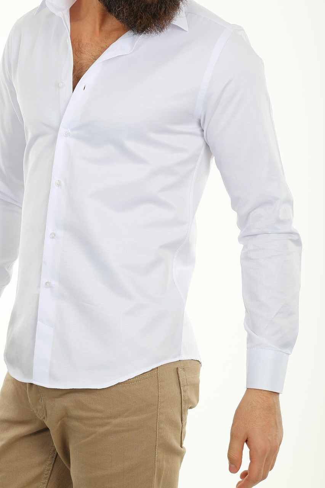
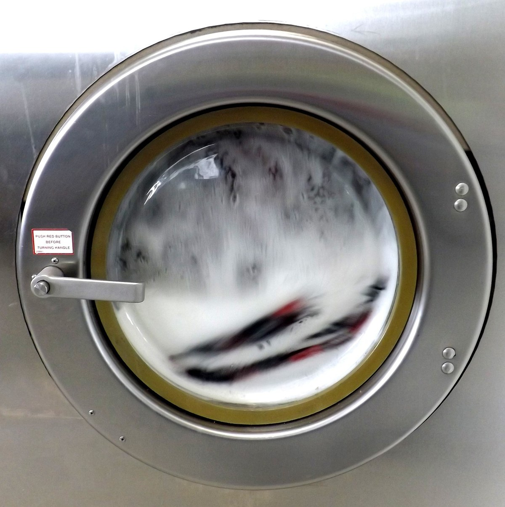
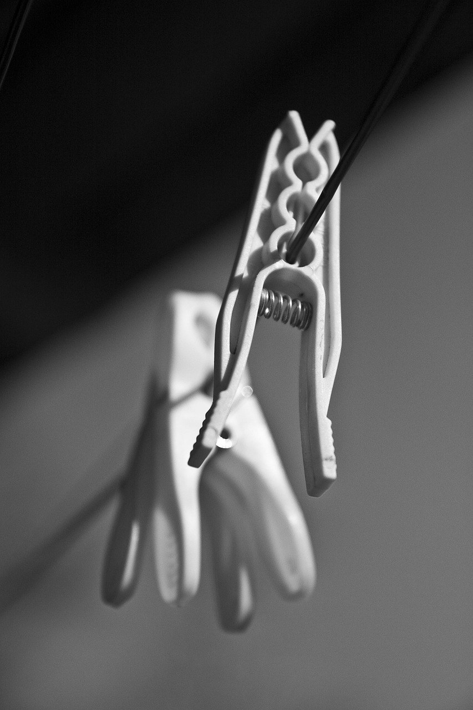

[사진 1: 썸네일]
분명 흰 티셔츠를 넣어 뒀는데, 꺼내 보니 목둘레와 겨드랑이만 누렇게 변해 있던 적 있나요? 특히 여름에 입던 흰옷을 겨울에 다시 꺼낼 때 이런 일이 많아요.
흰색 옷 하얗게 되돌리는 방법은 의외로 단순해요. 다만 물 온도와 옷감을 잘못 고르면 효과가 없거나 옷이 상할 수 있죠. 오늘은 많이 묻는 질문 순서대로, 원인부터 과탄산소다 쓰는 법과 주의할 점까지 정리해 드릴게요.
[사진 2]
땀 속 단백질과 피지, 덜 헹궈진 세제 찌꺼기가 섬유에 남아 시간이 지나면서 누렇게 변하는 경우가 많아요. 그래서 목둘레, 소매 끝, 겨드랑이처럼 몸에 닿는 곳부터 변해요.
알루미늄 성분이 든 데오드란트를 쓰면 겨드랑이 얼룩이 더 잘 생긴다는 설명도 있어요. 세탁하지 않고 한 번 더 입거나, 젖은 채로 오래 두면 얼룩이 더 깊어져요.
✍️ [내 경험 한두 줄: 우리 집 흰옷 중에 제일 먼저 누렇게 변하는 건 어떤 옷, 어느 부분인가요?]
과탄산소다는 따뜻한 물에 녹을 때 산소를 내며 얼룩을 빼요. 찬물에서는 반응이 느려 효과가 거의 없어서, 보통 40~60도 정도의 온수를 권해요. 옷 라벨에 적힌 최고 온도를 넘지 않는 게 기본이에요.
아래 표는 얼룩 정도에 따른 일반적인 방법이에요. 양은 제품 뒷면 사용법이 있으면 그걸 먼저 따르세요.
| 얼룩 정도 | 방법 | 시간 |
|---|---|---|
| 살짝 누런 정도 | 세탁할 때 세제와 함께 넣기 | 평소 세탁 코스 |
| 목때·소매 때 | 40도 안팎 온수에 풀어 담그기 | 30분 안팎 |
| 오래된 누런 얼룩 | 라벨 허용 범위의 뜨거운 물에 담그기 | 30분~1시간 |
| 면 100% 속옷·수건 | 라벨에 삶기 표시가 있으면 삶기 | 짧게, 지켜보면서 |
[사진 3]
📷 [직접 찍은 사진 넣기: 흰 티셔츠 안쪽 케어 라벨(세탁 표시)을 가까이 찍은 모습]
먼저 옷 안쪽 케어 라벨을 보세요. 물 온도, 표백 가능 여부, 삶기 표시가 다 거기 있어요. 표백 금지 표시가 있거나 울·실크가 섞인 옷은 과탄산소다를 쓰지 않는 게 좋아요.
[사진 4]
락스 같은 염소계 표백제는 면 흰옷에는 쓸 수 있지만, 울·실크·스판 섞인 옷은 상하기 쉬워요. 땀·데오드란트 얼룩은 락스와 반응해 오히려 더 누래질 수 있다는 설명도 있어요.
그래서 집에서 흰옷을 하얗게 할 때는 산소계 표백제(과탄산소다)를 먼저 쓰는 경우가 많아요. 두 표백제의 차이는 아래 '함께 보면 좋은 글'에 정리해 두었어요.
[사진 5]
표백이 끝나면 과탄산소다가 남지 않게 맑은 물로 여러 번 충분히 헹궈 주세요. 남은 성분은 다시 누렇게 변하는 원인이 될 수 있어요.
다시 누레지지 않게 하려면 입은 흰옷은 바로 세탁하고, 세제는 정량만 넣는 게 좋아요. 보관할 때는 완전히 말린 뒤 넣어 두세요.
✍️ [내 경험 한두 줄: 흰옷은 다른 빨래와 따로 빠나요, 같이 빠나요?]
Q. 세탁기에 과탄산소다를 같이 넣어도 되나요?
A. 가벼운 누런 기는 세제와 함께 넣어도 돼요. 다만 찬물 코스에서는 효과가 약하니 온수 코스를 고르고, 세탁기 설명서에서 표백제 사용 가능 여부를 확인하세요.
Q. 한 번에 하얗게 안 되면 어떻게 하나요?
A. 오래된 얼룩은 한 번에 다 빠지지 않을 수 있어요. 헹군 뒤 다시 담그는 편이 오래 담가 두는 것보다 옷감에 부담이 덜해요.
Q. 흰 운동화 끈이나 수건에도 쓸 수 있나요?
A. 면 소재라면 같은 방법으로 쓸 수 있어요. 수건은 섬유유연제 대신 충분한 헹굼이 더 도움이 돼요.
정리하면, 흰색 옷 하얗게 되돌리기는 라벨 확인 → 진한 곳 먼저 세제 바르기 → 40~60도 온수에 과탄산소다 담그기 → 여러 번 헹구기 순서예요. 울·실크와 표백 금지 옷은 빼는 것만 기억하세요.
여러분은 누런 흰옷을 어떻게 살리고 계신가요? 각자 쓰는 방법을 댓글로 나눠 주세요.
인스타그램 @todayzip.info 에서 살림 꿀팁을 30초 영상으로도 볼 수 있어요.